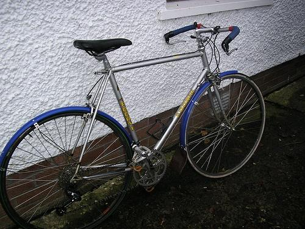

0.408285

0.484024

0.485060

0.503779

0.555183

0.585958
0.605733
0.614303
0.630670

0.662827
| Target image 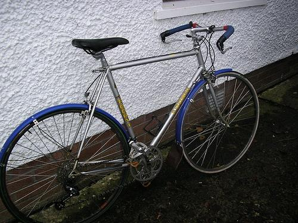 | 0.408285 | 0.484024 | 0.485060 | 0.503779 | 0.555183 | 0.585958 | 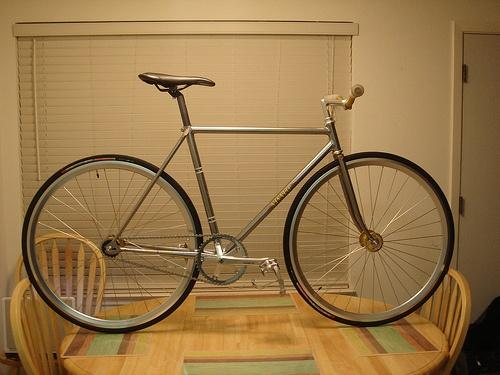 0.605733 | 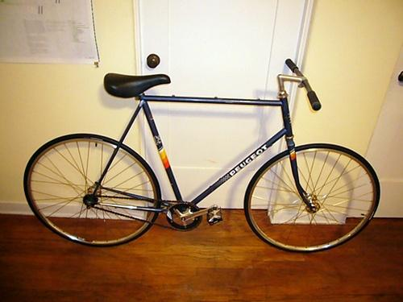 0.614303 | 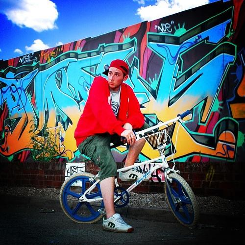 0.630670 | 0.662827 |
| Target image 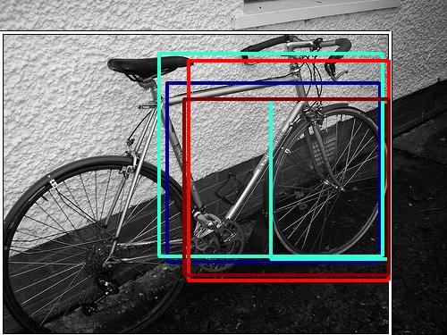 | 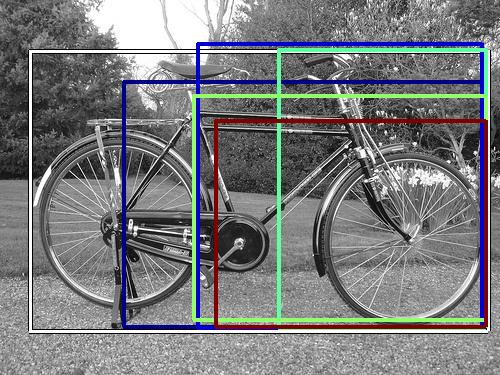 19974.349609 | 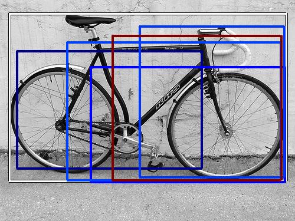 12978.094727 |  12591.753906 |  11890.616211 | 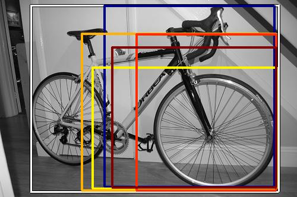 10036.106445 | 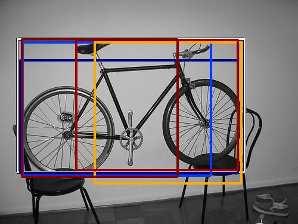 8973.530273 |  8532.396484 | 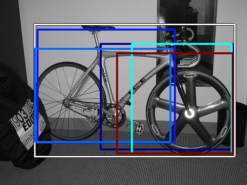 8190.387695 | 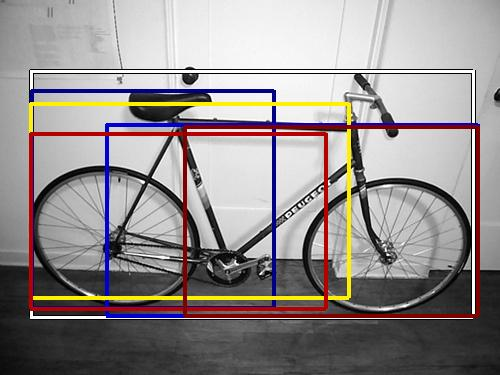 8058.222168 |  6796.552734 |
| Target image 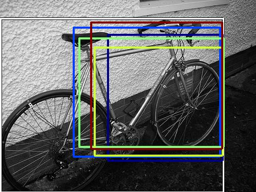 |  9954.069336 |  8837.125977 |  8334.124023 | 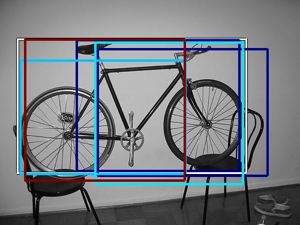 7417.066406 |  7169.911133 |  6363.000977 |  6211.164062 |  5460.324219 |  5314.044922 |  5258.348145 |
| Target image 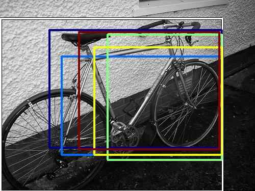 | 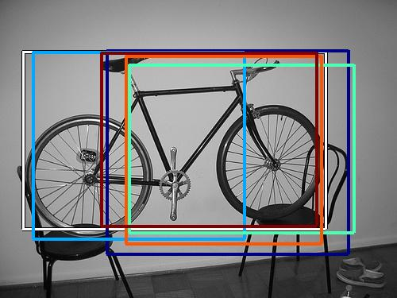 14854.361328 | 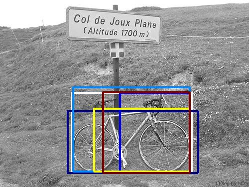 11883.379883 |  11161.425781 | 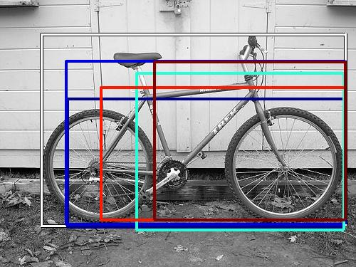 10803.997070 | 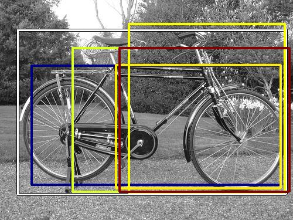 10469.378906 |  9718.711914 | 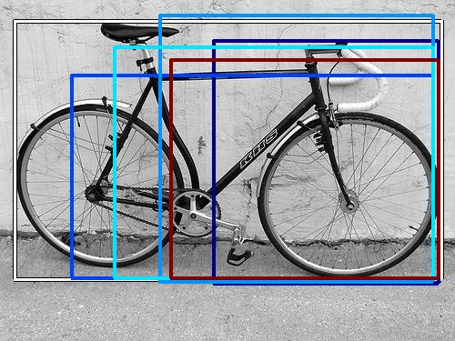 8610.083008 |  7811.081055 |  6916.499023 | 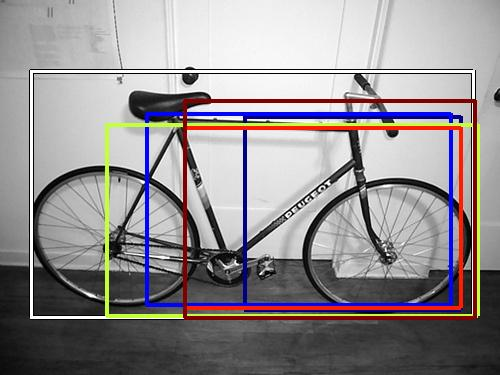 6211.151855 |
Target image | 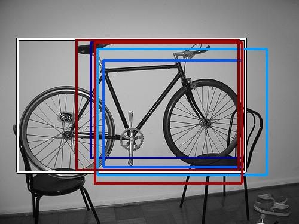 14574.937500 |  12494.604492 |  10064.435547 |  9647.148438 | 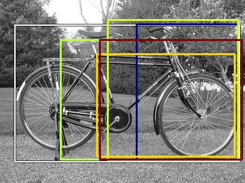 9461.858398 | 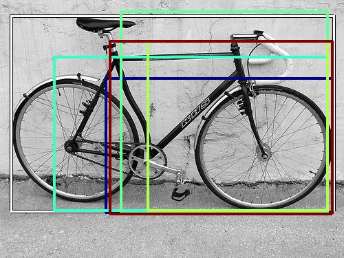 9254.237305 | 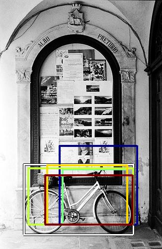 8268.230469 |  6788.633301 |  6410.149414 | 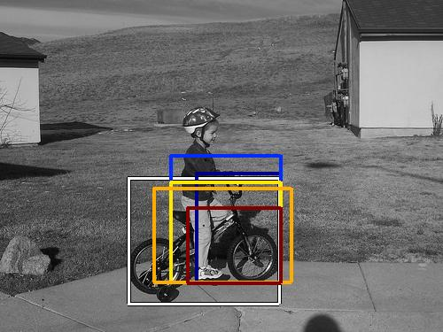 5954.342285 |